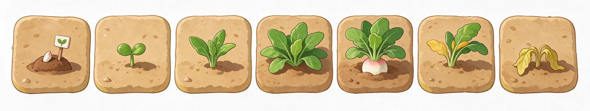

三屏
和彩纸的参考图是同一个存档、同一种排法:农场是第 1 年夏季第 3 天的 30 块地,牧场是第 1 年秋季第 20 天,矿洞是一条等着被挖的旧词矿脉。
农场
左边是彩纸的原稿,中间是模型拿到去掉文字和界面的原稿之后画出来的原样,右边是叠上界面之后。
30 块地逐块对过
| 查的是 | 结果 | 说明 |
|---|---|---|
| 干土、湿土、空地 | 30 块全对 | 干土和湿土的明暗差得比彩纸还开。空地的土色变深了,和湿土接近,只靠三道垄来分 |
| 蔫了的(2 株) | 都认得出 | 叶子发黄、下垂 |
| 不生长的(3 株) | 都认得出 | 一片叶子发黄。"整株歪向一边"画得很轻 |
| 作物是哪一种 | 29 块对,1 块丢了 | 第 4 行的玉米幼苗被画成了一根普通的嫩芽 |
| 作物的点睛色 | 3 块变了 | 萝卜的根肩从淡粉变成了白色。规范里靠这一点认萝卜 |
| 位置 | 没有挪 | 水滴、收获标记、星带按彩纸的坐标叠上去,都落在该落的地方 |
- 状态怎么表示,一条没改。能浇水是干土加水滴,浇过了是湿土,品质是星带,快收获是四角星。换的只是画法。
- 水滴和四角星是代码画的,所以"蓝色只表示水""黄色表示得到的东西"这两条在这一屏上还守得住。场景里的天是蓝的,这一条规矩在新画风下要重新写。
牧场
彩纸的牧场是 2026-11-21 定稿、11-22 合并进主干的。这里用的是它的参考图那一屏。
- 排法保住了:房子在上,院子在中间,草地在下;牛、羊、鸡的数量和位置都对,卧在干草上的那头牛和抱窝的那只鸡也在。
- 草数不出几捆了。彩纸的规矩是"几根穗就是几捆":矮、中、高各顶着 1、2、3 根玉米黄的穗。模型把草画成了自然的草丛,穗变成了红褐色的小点,高矮还看得出,根数数不清。这一条要么靠素材单独画,要么换一种说法。
- 见底的感叹号是叠上去的。参考图里饲料桶旁边那个感叹号模型没有画,按规则补在原来的位置。
- 草的颜色偏黄了,和院子、远山的绿分得不如彩纸清楚。
矿洞
词牌和四条石板要求模型留白,单词、音标、释义和标签都是代码叠上去的。
- 岩层的构图原样保住了:木梁、提灯、挂着的词牌、探出来的矿石、镐、四条石板、石板右端的矿。
- 字读得清。单词 40pt、释义 17pt 压在模型画的牌子和石板上,底色干净,没有纹理抢字。
- "点石板的那一下就是那一镐"没有变,但答对、运气好、答错三个关键帧这次没有画。石板裂开、矿石弹出要的是能动的素材,一张拼好的图做不了。
- 石板比彩纸更像一块块石头了,"静止时像一张选择题列表"这个老问题轻了一点。这是我自己看的。
缩小之后
规则允许地块扩到 120 块,那时每块地在屏幕上只有约 28pt。当初选彩纸的第一条理由就是它缩小之后状态最好认。下面按真实大小显示,请在手机上看。
- 干湿、水滴、收获标记都清楚,干土和湿土的明暗在新画风里差得更开。水滴和收获标记本来就是代码画的,两边一样。
- 作物两边差不多:都只剩轮廓和主色,蔫了的那两株靠发黄还认得出。新画风没有比彩纸明显更差。
- 这个判断是放大三倍看截图得出的,真实大小下线稿会不会糊,要在手机上看。
- 这是在一张缩小的整图上看的。真正的小图标应该单独画一套简化的,不是把大图缩小。
一套作物素材的试验
游戏里用的不是整屏的图,是一样一样的素材。试了一次:让模型把萝卜的七个状态画成一排(种子、发芽、幼苗、成株、成熟、不生长、枯萎), 把上面那张农场当参考图来对齐画法。只出了一张,没有挑。

- 七个都画对了,而且是同一种画法、同一块土、同一个大小。成熟的那个根肩是淡粉的;不生长的有一片黄叶、整株歪着;枯萎的全黄、下垂。
- 这改了成本的算法。彩纸的做法是"状态靠变换,不靠重画",因为重画贵。现在重画一种作物的全部状态是一次调用、不到一分钟。12 种作物是 12 张。
- 还没有验证的:12 张之间画风和大小统不统一;怎么切成一个个素材;湿土和干土要分开出;生长的动画原来靠纸片的位移和缩放,换成位图之后只能换图。只试了萝卜这一种。
怎么做的
- 把彩纸的画面去掉文字和界面,只留场景(
source.html)。农场连水滴、四角星和星带也去掉。 - 当参考图交给图像模型,要求按新画法重画,构图和每样东西的位置、数量、状态不变,画面里不要有字和界面。三屏各出了一张,没有挑,也没有重出。
- 把顶部信息、底部按钮、单词和释义、标记叠回去。这些是代码画的,用的是彩纸那一屏的坐标,一个没有挪。界面的图形还是彩纸那一套,只把硬边投影换成了一圈深褐色的线稿加投影。
- 彩纸的那几屏没有白做。它们现在是布局稿:排法、尺寸、状态的表示法都定在那里,模型照着画。以后要改一屏的排法,先改彩纸的代码,再重画。
- 用量:4 次调用(三屏加一张素材),每张 40 到 60 秒。价格以账单为准。提示词和每张的用量在
generated/manifest.json,里面没有任何作品和画师的名字。
没做的,和发现的问题
发现的问题
- 界面没有重新设计。顶部的药丸、底部的按钮、水滴、星带都是彩纸的图形描了一圈线。它们和场景放在一起能看,但不是为这种画风设计的。
- 人物还没有放进这三屏。玩家自己的角色、居民在场景里是什么样、多大,没有画。
- 规范里的几条规矩要重写:"蓝色只表示水"(天是蓝的);"红色不当警告色";"没有描边、渐变";"不用纯黑纯白"。哪些留、哪些改,要逐条过。
- 牧场的草数不出几捆,农场的萝卜丢了淡粉的根肩,有一株玉米幼苗认不出。都是"模型大体照做、细处自己发挥"的结果。靠单独的素材能管住,靠整屏重画管不住。
- 同一屏每次出图都会不一样。这次每屏只出了一张。画面要改一处,就得整张重出,别的地方也会跟着变。
没做的
- 矿洞答题之后、矿洞关门、割草答题、做饲料、买卖、词袋、商店、小镇地图、对话:都没有重做。
- 没有动效。
- 没有按新画风写色板、字体和形状的规定。字体沿用原来的三种。
- 没有上真机,只在浏览器里按手机宽度看过。
- 没有问过任何目标用户。"认得出""读得清"是我自己看的。
- 没有做色觉模拟,没有重新算明暗对比。
- 没有在引擎里试过:位图素材的包体、内存、图集怎么切。
- 没有逐张比对画面是否像某个已有游戏的画面。
- AI 生成的美术能不能上架、版权归属,仍然没有答案,见
../06-roadmap.md的未决问题。现在整个画面都落在这个问题里了。